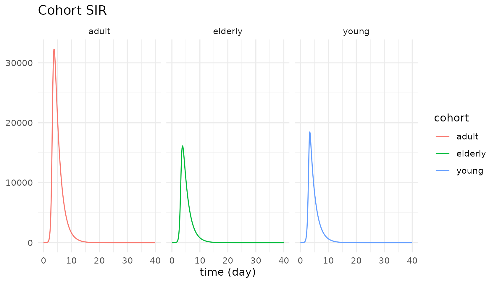

library(tidysd)
#>
#> Attaching package: 'tidysd'
#> The following object is masked from 'package:stats':
#>
#> simulateOne chain, declared once
A subscript is a named dimension. Declare it with
subscripts(), give a variable dims =, and
write each equation once – element-wise, as ordinary R arithmetic.
Duggan’s disaggregated SIR splits a population into three cohorts, each with its own S/I/R, coupled through a 3x3 contact matrix.
coh_struct <- sd_structure(
meta(name = "Cohort SIR"),
subscripts(cohort = c("young", "adult", "elderly")),
stock("S", dims = "cohort", units = "people", non_negative = TRUE),
stock("I", dims = "cohort", units = "people", non_negative = TRUE),
stock("R", dims = "cohort", units = "people", non_negative = TRUE),
aux("lambda", dims = "cohort", units = "1/day"),
aux("total_infected", units = "people"),
flow("IR", from = "S", to = "I", dims = "cohort", units = "people/day"),
flow("RR", from = "I", to = "R", dims = "cohort", units = "people/day")
)
coh_eqns <- sd_equations(
lambda ~ (CE %*% I) / pop, # CE is cohort x cohort; %*% contracts against I
IR ~ lambda * S, # element-wise over cohort
RR ~ I / recovery_time,
total_infected ~ sum(I) # reduce the cohort dim -> scalar
)The force of infection is a matrix-vector product; the transitions are element-wise; the total is a reduction. Nothing else in the model text knows there is more than one cohort.
Constants can be vectors and matrices
coh_pars <- sd_parameters(
constant(
CE = matrix(c(3, 2, 1,
2, 2, 1,
1, 1, 0.5), nrow = 3, byrow = TRUE),
pop = c(young = 25000, adult = 50000, elderly = 25000),
recovery_time = 2 # a scalar broadcasts over the dimension
),
initial(
S = c(young = 24999, adult = 50000, elderly = 25000),
I = c(young = 1, adult = 0, elderly = 0),
R = 0 # so does a scalar initial
)
)
out <- simulate(coh_struct, coh_eqns, coh_pars,
spec = sim_spec(0, 40, 0.125, time_unit = "day"))A subscript is just another column
The payoff of tidy output: the dimension comes back as a column, so
faceting is ordinary ggplot2.
autoplot(out, vars = "I") + ggplot2::facet_wrap(~cohort)
Reductions are scalars, so their subscript column is
NA:
subset(as.data.frame(out), variable == "total_infected" & time %in% c(0, 4, 40),
select = c(cohort, time, variable, value))
#> cohort time variable value
#> 5779 <NA> 0 total_infected 1.000000e+00
#> 5811 <NA> 4 total_infected 6.184651e+04
#> 6099 <NA> 40 total_infected 6.098787e-04The dimension can be large
Nothing about the model text changes when the dimension grows. The
town population model replicates one Population stock over
351 members, and pushes births through an eighth-order delay of one
lifespan – an aging chain written as one delayN() rather
than eight hand-built cohort stocks.
ex <- sd_example("town_population")
ex$equations
#> <sd_equations> 2 equations
#> births ~ birthrate * Population
#> deaths ~ delayN(births, lifespan, order = 8, initial = Population/lifespan)
out <- sd_example_run("town_population")
d <- as.data.frame(out)
tot <- tapply(d$value[d$variable == "Population"], d$time[d$variable == "Population"], sum)
round(tot[c("0", "5", "10", "20")])
#> 0 5 10 20
#> 6547704 9974080 15492293 38690983How other tools write the same sum
Two families. The index family adds a named
dimension and uses a reduction operator for
Lambda[c] = sum_j beta[c,j] * I[j]:
| Tool | how that sum is written |
|---|---|
| Vensim | SUM(beta[cohort, cohort2!] * Infected[cohort2!]) |
| Stella / iThink | SUM(beta[Cohort, *] * Infected[*]) |
| PySD (xarray) | (beta * Infected).sum("cohort2") |
| ModelingToolkit.jl | CE * I |
| tidysd | (CE %*% I) / pop |
The composition family (StockFlow.jl) never writes
an index at all: build the base SIR and a small model of the age
structure, then stratify. tidysd sits with the index
family, with the payoff that a subscript is just another column in the
output tibble.